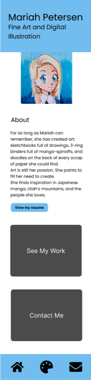
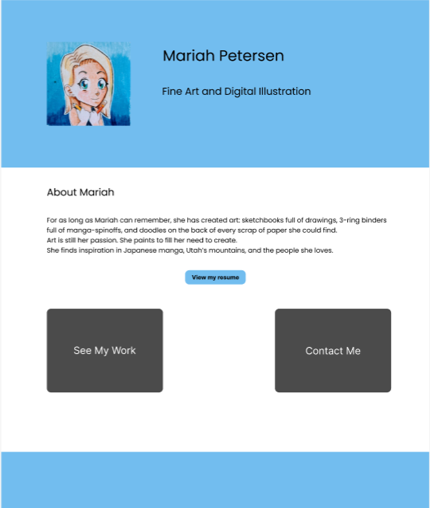

Site Name: Mariah Petersen
Fine Art and Digital Illustration
Why this name was chosen: Mariah Petersen is the name of the artist whose portfolio is represented by the website. The byline tells users what they can find on the site.
Optional domain availability: MariahPetersen.com, MariahPetersen.net
Site Purpose
- Introduce the artist
- Display the artist's portfolio
- Provide contact information for the artist
User Scenarios
As a potential customer I want to see more examples of Mariah's work so I can get a better idea of her style.
As a fan of anime, I am looking for custom Pokemon cards that I can purchase.
Color Schema
#72bdef
#f0BC73
Colors to be used as header and footer background colors, buttons.
Typography
Poppins h1 (hero): 36px
h2: 24px
p: 16px regular, bold, italic
Wireframes

